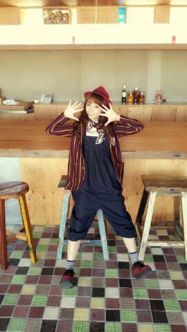

やあ(*▽*)ノ Rotty☆だよぉ,
「13日の金曜日」がすごく
好評で良かったん(*´ω`*)
ほんで、コメント読んでたら
思った以上に着てた服が
好評で ろってぃ-嬉しいキモチ
ですやぁ〜ん(*´∀｀)ノ
いやん、もう 皆ったらぁ〜 笑
皆さんアリガト。
嬉しいよ,ほんと
『あれは皆 私服? 』って質問
いくつかあったけど、
そうだよん (((/´▽`)/
皆それぞれ曲のイメージに
合わせて服を選んで
着てきたんだよん♪

ろってぃー私服♪
こんな感じです...
歌詞でね、
「ポップコーン頬張りながら〜 」
ってゆうのがあるんやけど、
歌い訳知った時しゅっごーーい
嬉かった (・▽・)
まひろ、
キャラメルポップコーンとコーラ
本間好きやねん
この組み合わせで
カラオケにいたりするから
自分のことかと思ったわ
(〃ω〃) テヘペロ笑
そしてね、
このオーバーオール的な服ね、
あみが気に入ってくれて
色違い買ってくれたの (^-^)
まひろが紺色★,あみがグレー☆
おそろっちん。
そしてさあ、
最近AKB48さんの新曲のPVも
よくテレビで流れてるぢゃんね?
松井玲奈さんが
このまひろが着てるジャケットと
同じの着てるの(*´▽`*)
多分 一緒のだよ (^-^)/
テレビで流れてきたら
見てみてん ♪/
ぴょんっ)))
今日はね、とある撮影やったよう。
楽しかった楽しかったぁ〜〜
仕事帰りに ファミマのエクレアを
買って帰ってん ^ω^
ファミマのエクレアは
めちゃうまやで !
大阪おる時 近所にファミマが
あってよく買ってたことを
急に思い出して、
買ったら やっぱ
めちゃうまやったわ (/´▽`)/
ほな、また更新するでぇ〜ん
テーブルの上にピザ。
おやすみなさい、のし♪